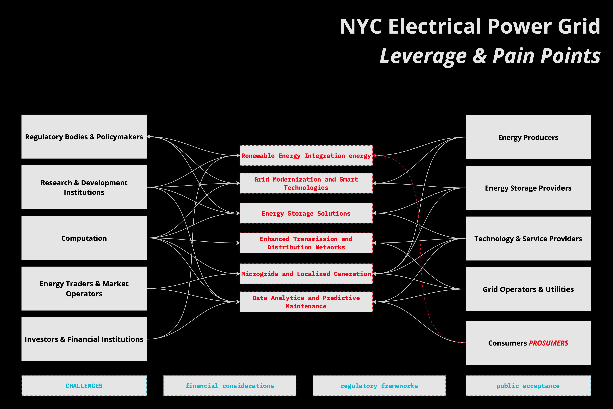
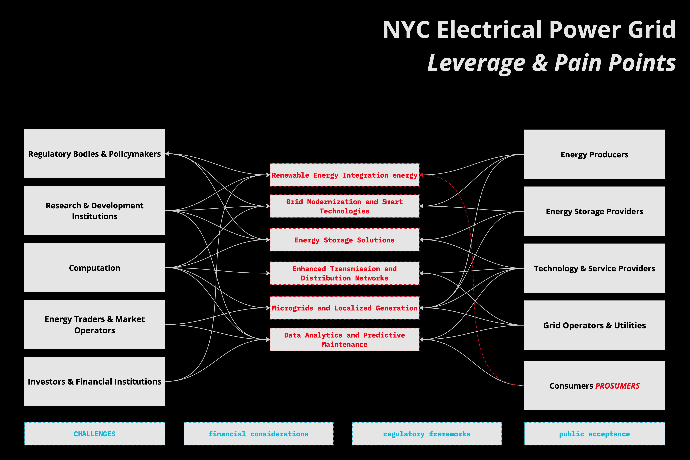

Virginia Zangs
Table of Contents
1 – Systems
Summer in the City
Unraveling New York City's Electric Grid System

What is the system?
I am currently thinking about electrical power grids as resilient systems, specifically in the context of New York City. As I am experiencing New York City during summer heat, I am keen to explore how the dynamics of the electric grid of New York City can be understood as a system by focusing on its relationship with air conditioning and extreme weather.
The existing grid of NYC, is composed of an interconnected complex system composed of various elements such as power plants, transmission lines, and distribution networks. The Function of the System is to serve 19.6 Million New Yorkers, with 20,224 Megawatts Real-Time Load.*1 The New York ISO Independent System Operator, a nonprofit that runs the state’s grid and power markets, forecasted the summer 2023 demand of 23,048 MW with a total installed capacity requirement for the summer capability period of 38,458 MW.*2

Whom does it impact?
The resilient functioning of the electric grid becomes crucial during a heatwave and the increasing demand for electricity due to the widespread use of air conditioning.*3 Air conditioners use about 6% of all the electricity produced in the United States.*4 The phenomenon of the urban heat island effect in New York City causes “hyperlocal temperature” as some areas are hotter than others.*5 Grid resilience relies on several key factors, including weather forecasting, demand forecasting, and supply management. Weather forecasting provides crucial insights into potential weather events, allowing grid operators to proactively prepare and minimize damage. Accurate demand forecasting enables grid operators to anticipate peak demand periods and ensure sufficient capacity to meet consumer needs, preventing overloads and blackouts. Effective supply management involves continuously monitoring power sources and coordinating their dispatch to maintain a stable power supply. Advanced technologies, such as smart grids, enhance resilience by enabling real-time monitoring, automation, and efficient response to disruptions. Additionally, effective communication and coordination among stakeholders are vital for timely response and recovery. By integrating these elements, the grid can better withstand challenges, quickly recover from disruptions, and provide a reliable electricity supply to consumers.
The stocks can be represented by the accumulated energy available, while the flows depict the movement of electricity throughout the city. As hot temperatures persists, stocks of energy are depleting faster than usual, as the continuous flow of electricity is required to meet the heightened demand. The frequency of power outages and fluctuations in the grid's performance becomes more pronounced during extreme weather conditions. Delays in infrastructure repairs, maintenance, and blackouts can exacerbate the challenges faced by the electric grid, leading to a longer recovery time and potential disruptions.
The increasing demand for electricity due to air conditioning usage leads to a reinforcing feedback loop - the demand further strains the grid, requiring even more power supply. This constant recurring loop highlights the need to question the existing system and how infrastructures and cities could be transformed towards more adaptable and sustainable systems.
"Can architectural interventions and urban design strategies provide opportunities to reduce the strain on the grid?"
What are its leverage points?
Leverage points include the integration of renewable energy sources, demand response programs, grid modernization, and energy storage solutions. By increasing the share of renewable energy, managing peak demand through demand response programs, implementing advanced technologies for grid modernization, and utilizing energy storage, the grid can become more sustainable, efficient, and resilient.
Can architectural interventions and urban design strategies provide opportunities to reduce the strain on the grid? Efficient building insulation (Local Law 97 *6) , urban green spaces that mitigate the urban heat island effect, the integration of renewable energy sources and questioning the hierarchy of the grid by thinking of decentralised power supplies, are potentials that could alleviate the burden on the grid and decrease the reliance on air conditioning.
However, there are also pain points that need to be addressed. These include outdated infrastructure, vulnerability to extreme weather events, limited transmission and distribution capacity, and regulatory challenges. Upgrading and maintaining the aging infrastructure, improving resilience to weather events, expanding transmission and distribution networks, and navigating complex regulatory environments are crucial for overcoming these pain points and enhancing the grid's performance.Air conditioning has indeed transformed our build - environment and has become an integral part of living in hot temperatures. It is important to consider the implications of this reliance on air conditioning and the need to develop more sustainable and resilient solutions for cooling in the face of climate change. I would like to address the dynamics of the electric grid and explore innovative architectural interventions, to work towards a more balanced and efficient system that can withstand the challenges of extreme weather events and reduce our impact on the environment.
 

2 – Authorship
e·co·sys·tem
Decentralized Blockchain-Based Prosumer Ecosystem
In summary, this proposal offers a vision of a decentralized, blockchain-based ecosystem where prosumers, equipped with renewable energy resources, participate actively in a resilient, balanced, and sustainable energy commons. This environment is maintained by AI, contributing to the creation of a sustainable, green future.
3 – Politics
Data Behavior
Navigating & Questioning the Nature of Code
In the realm of data, the question of how behavior of individuals, collectives, and systems can be accurately modeled gives rise to critical considerations. Data analysis holds immense potential in understanding human behavior, yet it raises ethical and political concerns. By reducing people to data points and oversimplifying complexities, modeling risks perpetuating biases and stereotypes. Moreover, algorithmic decision-making based on data models can reinforce existing inequalities, leading to discriminatory outcomes.
4 – Governance
a design fiction about a system's future governance.
A profile of governance.
Cycle City
Design Fiction:
A Day in the Life of a Cyclist in 2035 In the year 2035, the cityscape has been transformed to prioritize cycling and outdoor activities. As the sun rises, Ava, a fitness enthusiast and environmental advocate, begins her day. Ava's smart home system gently wakes her up with a simulation of a sunrise, accompanied by a soft melody. After a quick breakfast, she prepares for her daily commute to work. She steps into her weather-adaptive cycling suit, a marvel of textile technology that adjusts its temperature and texture based on the weather conditions, ensuring she is always comfortable during her ride. She heads to the garage where her smart bike awaits. The bike, equipped with an AI-powered navigation system, has already planned the most efficient route to her workplace. The navigation system is designed specifically for cyclists, taking into account bike lanes, traffic conditions, and even the scenic value of the route. As Ava starts her journey, the city's infrastructure caters to her needs. The smart roads detect her presence and illuminate the bike lanes for better visibility. The city's weather control system, a network of weather modification drones, ensures a clear sky for cyclists, making rainy or snowy commutes a thing of the past. During her ride, Ava's bike also doubles as a fitness device. It tracks her vitals, the calories burned, and even her posture. The data syncs with her health profile in real-time, helping her meet her fitness goals. On her way, Ava passes through the city's green corridors, areas dedicated to outdoor activities. She sees groups of people engaged in yoga, running, and other forms of exercise. The city, once dominated by cars, is now a haven for cyclists and fitness enthusiasts. Ava's commute is not just a means of getting to work; it's a daily fitness routine, a way to connect with the city and a testament to how technology has seamlessly integrated cycling into everyday life. The city of 2035 is a city built for people like Ava, where technology, fitness, and sustainability intersect to create a healthier and more connected community.
 |